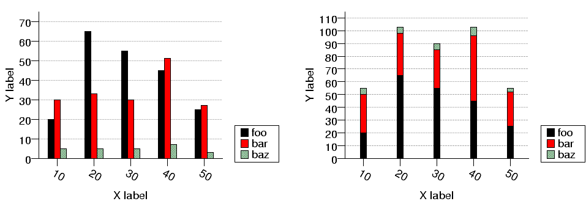
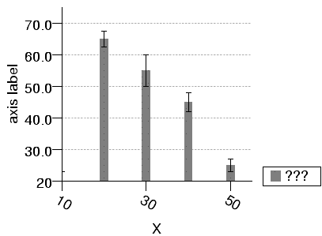

| PyChart |
| PyChart |

Sample bar plot
Below is the source code that produces the above chart. ../demos/bartest.py
from pychart import * theme.get_options() data = [(10, 20, 30, 5), (20, 65, 33, 5), (30, 55, 30, 5), (40, 45, 51, 7), (50, 25, 27, 3)] chart_object.set_defaults(area.T, size = (150, 120), y_range = (0, None), x_coord = category_coord.T(data, 0)) chart_object.set_defaults(bar_plot.T, data = data) # Draw the 1st graph. The Y upper bound is calculated automatically. ar = area.T(x_axis=axis.X(label="X label", format="/a-30{}%d"), y_axis=axis.Y(label="Y label", tic_interval=10)) ar.add_plot(bar_plot.T(label="foo", cluster=(0, 3)), bar_plot.T(label="bar", hcol=2, cluster=(1, 3)), bar_plot.T(label="baz", hcol=3, cluster=(2, 3))) ar.draw() ar = area.T(legend = legend.T(), loc=(250,0), x_axis=axis.X(label="X label", format="/a-30{}%d"), y_axis=axis.Y(label="Y label", tic_interval=10)) bar_plot.fill_styles.reset(); plot1 = bar_plot.T(label="foo") plot2 = bar_plot.T(label="bar", hcol=2, stack_on = plot1) plot3 = bar_plot.T(label="baz", hcol=3, stack_on = plot2) ar.add_plot(plot1, plot2, plot3) ar.draw()

Bar plot with error bars
Below is the source code that produces the above chart. ../demos/bartest2.py
from pychart import * theme.get_options() data = [(10, 20, 3.0), (20, 65, 2.5), (30, 55, 5.0), (40, 45, 3.0), (50, 25, 2.0)] ar = area.T(x_axis=axis.X(label="X", format="/a-30{}%d", tic_interval=20), y_axis = axis.Y()) ar.add_plot(bar_plot.T(data=data, line_style=None, fill_style = fill_style.gray50, error_bar = error_bar.bar2, error_minus_col=2)) ar.draw()
The list the attributes understood by an bar_plot.T object follow:
Specifies the column from which base values (i.e., X values when attribute "direction" is "vertical", Y values otherwise) are extracted. The combination of "data", "bcol", and "hcol" attributes defines the set of boxes drawn by this chart. See the below example:
d = [[5,10], [7,22], [8,25]]
p = bar_plot.T(data = d, bcol = 1, hcol = 2)
Here, three bars will be drawn. The X values of the bars will be 5, 7, and 8. The Y values of the bars will be 10, 22, and 25, respectively. (In practice, because the values of bcol and hcol defaults to 1 and 2, you can write the above example just as "p = bar_plot.T(data = d)".
This attribute is used to cluster multiple bar plots side by side in a single chart. The value should be a tuple of two integers. The second value should be equal to the total number of bar plots in the chart. The first value should be the relative position of this chart; 0 places this chart the leftmost, and N-1 (where N is the 2nd value of this attribute) places this chart the rightmost. Consider the below example:
a = area.T(...)
p1 = bar_plot.T(data = [[1,20][2,30]], cluster=(0,2))
p2 = bar_plot.T(data = [[1,25],[2,10]], cluster=(1,2))
a.add_plot(p1, p2)
a.draw()
In this example, one group of bars will be drawn side-by-side at position x=1, one with height 20, the other with height 25. The other two bars will be drawn side by side at position x=2, one with height 30 and the other with height 10.
The separation between clustered boxes.
Specifies the data points. See Section 5
The format string for the label displayed besides each bar. It can be a `printf' style format string, or a two-parameter function that takes (x,y) values and returns a string. The appearance of the string produced here can be controlled using escape sequences. See Section 17
The location of data labels relative to the sample point. See also attribute data_label_format.
The direction the growth of the bars. The value is either 'horizontal' or 'vertical'.
Specifies the style of the error bar. See Section 9.2
Specifies the column from which the depth of the errorbar is extracted. This attribute is meaningful only when error_bar != None.
The depth of the errorbar is extracted from this column in data. This attribute is meaningful only when error_bar != None.
Defines the fill style of each box.
The column from which the height of each bar is extracted. See also the description of the 'bcol' attribute.
The label to be displayed in the legend. See Section 6.3, See Section 17
The fill style used to draw a legend entry. Usually, the value is None, meaning that the value of "fill_style" attribute is used.
The line style used to draw a legend entry. Usually, the value is None, meaning that the value of "line_style" attribute is used.
The style of the outer frame of each box.
The depth of the "quartile" errorbar is extracted from this column in data. This attribute is meaningful only when error_bar != None.
The depth of the "quartile" errorbar is extracted from this column in data. This attribute is meaningful only when error_bar != None.
The value must be either None or bar_plot.T. If not None, bars of this plot are stacked on top of another bar plot.
Width of each box.
| PyChart |